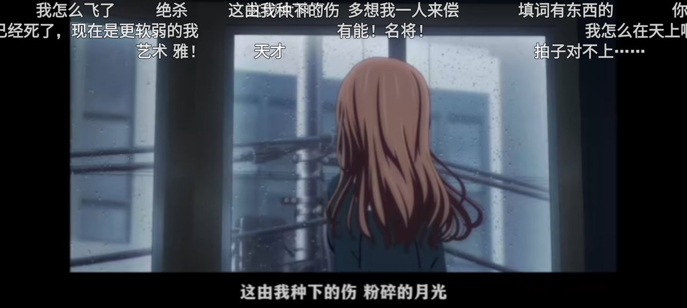

北雁冬翼（simone luxem）🏳️⚧️🏳️🌈🔬
@Simone_Luxem
@MinakoOikawa 诶..为什么要这样..是在刻意压抑自己情感吗..？
如果是的话没有必要这样做的呀…为什么要这样…？

小島みなこ 🏳️⚧️
@MinakoOikawa
明明作为mtf能被男生表白我应该暗地开心才是。。。至少说明你rle有效。。。可为什么。。。视线却这么滚烫模糊呢。。。 https://t.co/V4g0bI5SyD https://t.co/4iWXHBsTrT